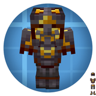
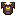

Create: Unbreakable Armor
附属模组
把下界合金盔甲做成永不磨损
这是什么
四件套盔甲，全部用动力合成器（机械合成）做：下界合金块 + 金块 + 红石，成品带「无法破坏」属性，穿到死也不用修。
命名空间：
create_unbreakable_armor 1.20.1 版本：本页物品与配方直接取自该版本的 jar。全部物品4
Unbreakable Netherite Bootscreate_unbreakable_armor:unbreakable_netherite_boots
没有工作台/机器配方

Unbreakable Netherite Chestplatecreate_unbreakable_armor:unbreakable_netherite_chestplate
没有工作台/机器配方
Unbreakable Netherite Helmetcreate_unbreakable_armor:unbreakable_netherite_helmet
没有工作台/机器配方
Unbreakable Netherite Leggingscreate_unbreakable_armor:unbreakable_netherite_leggings
没有工作台/机器配方